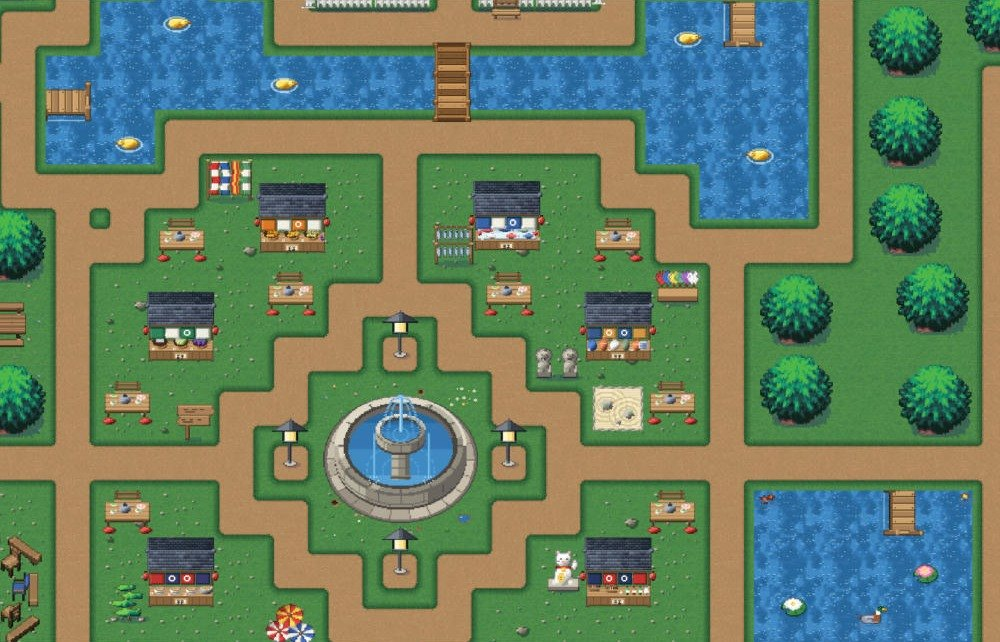
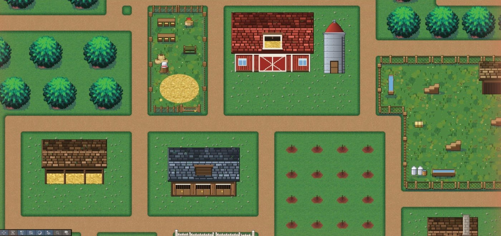
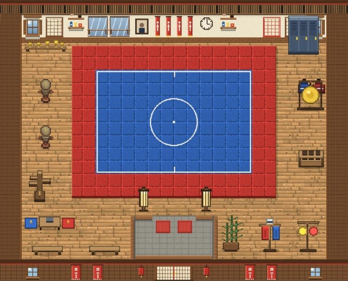
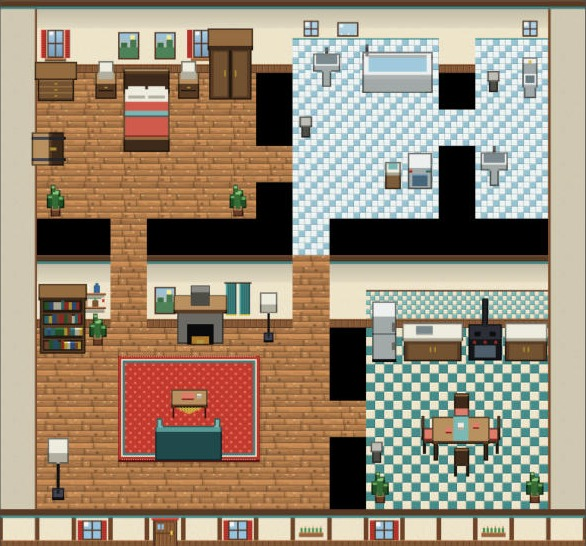
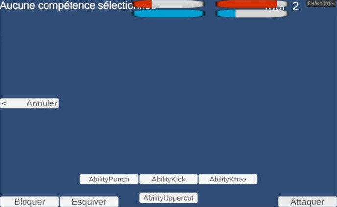

L'histoire
Le joueur incarne un étudiant pas vraiment passionné par ses études, qui découvre que son grand-père était un combattant reconnu. Il décide de suivre ses traces : se faire un nom pour obtenir une recommandation et intégrer un club d'arts martiaux.
Le jeu mélange exploration d'une ville découpée en zones, quêtes auprès des habitants et combats en arène, avec plusieurs boss liés à l'histoire.
Exploration & quêtes
L'île du Coup de Pied Céleste est construite en tilemaps pixel art : village et marché autour de la fontaine, fermes, plage, port et sanctuaire de la montagne. Les PNJ dialoguent et confient des quêtes (15 à 20 prévues).
Exemple : une tempête a détruit les ponts. Pour rejoindre le dojang, il faut réunir bûches, marteau et cordes en aidant les villageois, puis échanger un poisson de bronze chez l'antiquaire contre une torche… pour explorer la grotte.



Les intérieurs
Certains bâtiments sont accessibles : le joueur peut entrer dans le dojo, où il s'entraîne, ou dans les maisons des habitants qui lui confient des quêtes.


Le combat
Les affrontements se déroulent dans une arène dédiée. Le joueur peut attaquer, bloquer ou esquiver et utiliser des compétences (coup de poing, coup de pied, genou, uppercut), avec barres de vie et d'énergie. Le club d'arts martiaux choisi influencera le style de combat.

Objectifs techniques
- Carte et itinéraire : choisir une destination et afficher le chemin le plus court (pathfinding).
- Combat : animations, hitboxes, IA des adversaires et boss.
- Progression : niveaux, statistiques, inventaire, équipements, sauvegarde locale en JSON.
- Accessibilité : palettes de couleurs adaptées et guide audio.
- Numérique responsable : limiter les calculs inutiles (collisions, animations, PNJ).
Projet en cours de développement : la page évoluera avec l'avancement du jeu.